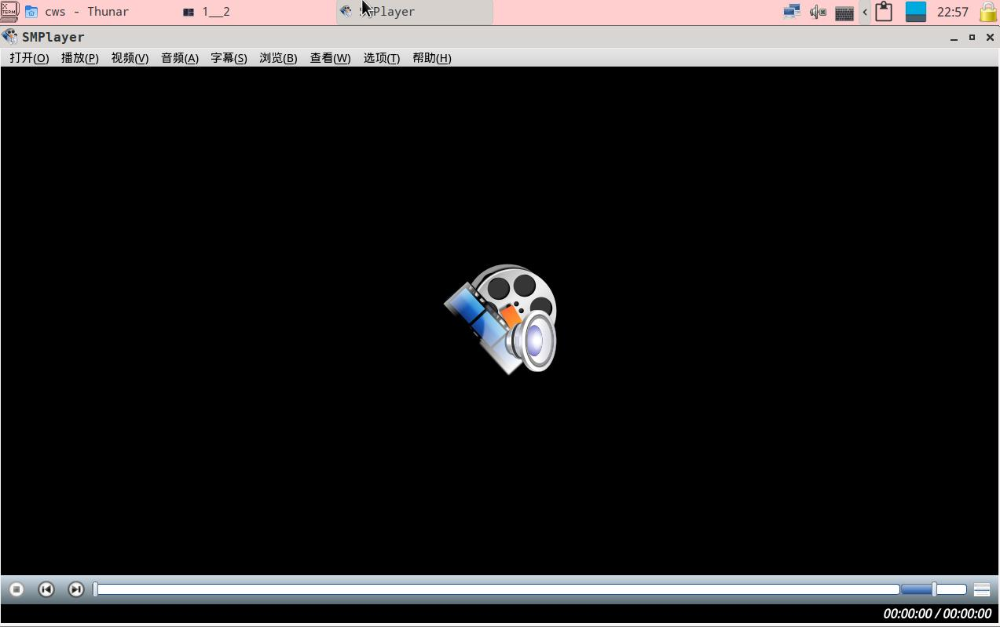
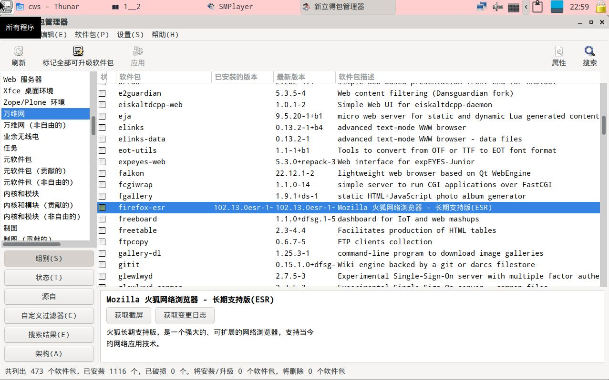
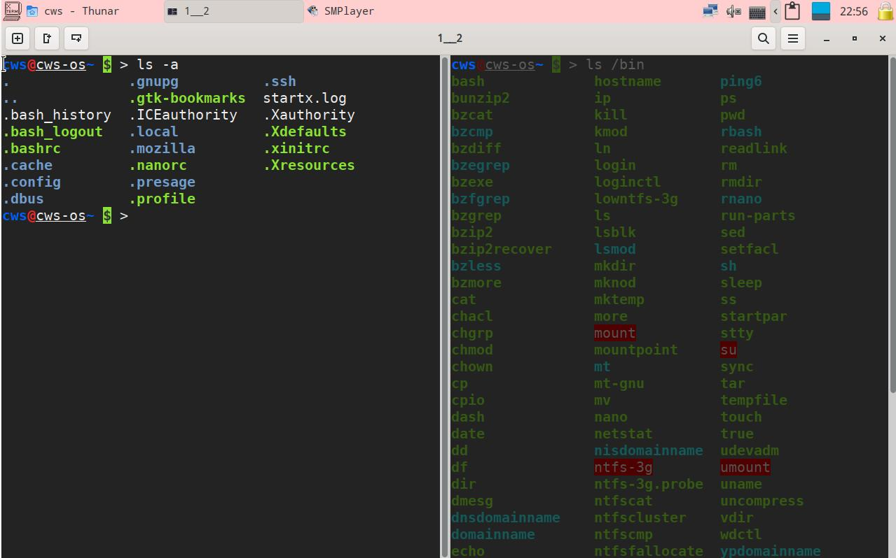
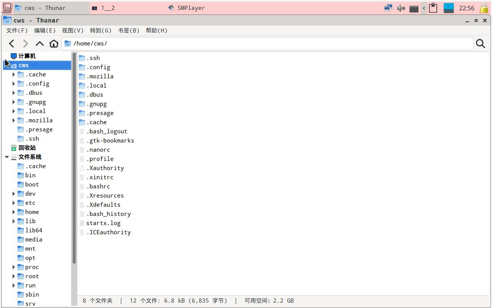

CwsDev-OS是一个好用易用的操作系统,它开源,安全,可自由使用,无需付费就可使用.
它由多个地球人的创作集结而成,这是一项伟大的工程.
下载地址 https://www.123pan.com/s/xIE8Vv-KqT5H.html
CWSDEVOS_X64_uefi_bios_USER_cws_PASSWD_qweasd_2023-03-05.iso
sha512sum = 142f2711bc1563534662eb5130d2b2c63b62c31be525b44aeabfd4d432
6e7ea87d9310a35d750e7e41e4a84e84103ad3675c4d7c062560640b2be8b01f3e0512
CWSDEVOS_X64_uefi_bios_USER_cws_PASSWD_qweasd_2023-08-02.iso
sha512sum = b34732ed37e553bce25b73c79e3cbe7147fbeade1321947d91d4c7830c
614c35e1eb8b19aa797bc271cd2e504be9b94995772ae2bfd9f7693e4a8135336c38b0
桌面截图:
支持很多格式的音视频播放器--smplayer

app浏览搜索--synaptic

多窗口多标签的终端--tillix

多标签,容易定制右键菜单的文件管理--Thunar

创建时间 : 2023-03-05
修改时间 : 2023-08-02
说明 : No
参考网址 :
- www.devuan.org
- www.linux-live.org